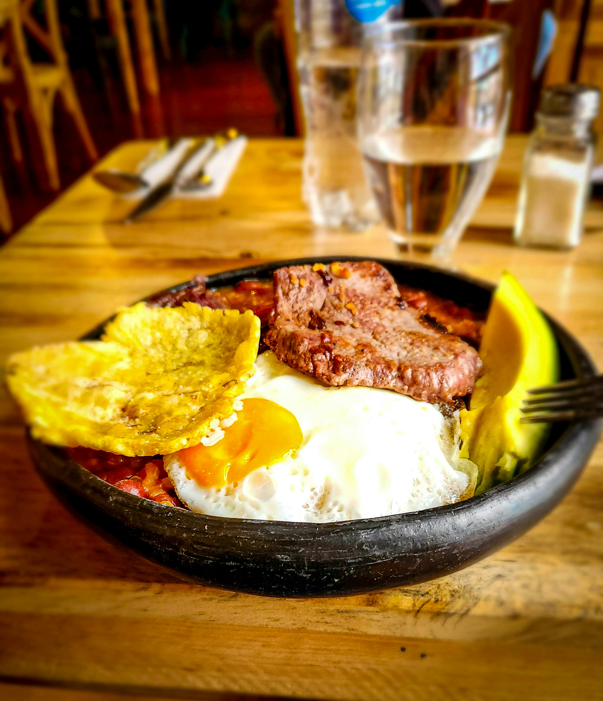

¡Bienvenidos a Sabor Casero! ☕🍳
Descubre nuestras opciones de desayunos caseros, acompañamientos, bebidas y almuerzos. Una propuesta pensada para quienes disfrutan de la comida tradicional, práctica y hecha con cariño.
🍳 Así se vive Sabor Casero

Una imagen ilustrativa del estilo de desayuno casero que inspira esta demostración de Sabor Casero.
☕ Un sabor casero para cada momento del día
Una propuesta de desayunos variados y almuerzos caseros, inspirada en un pequeño kiosco de comidas.
Para trabajadores y oficinistas: opciones para consultar antes de elegir su comida.
Para residentes del sector: información clara sobre desayunos, almuerzos y precios habituales.
Para quienes van al gimnasio: la posibilidad de conocer los ingredientes y combinar productos según sus preferencias.
🍳 Desayunos personalizados
Huevos revueltos
Con tomate y cebolla, carne hilachada, berenjena o atún.
Porción: $6.000 COP
Media porción: $3.000 COP
Porciones adicionales
Huevo cocido: $2.000
Queso: $2.000
Chorizo: $6.000
Chicharrón: $7.000
Pollo guisado: $7.000
Acompañamientos
Patacón: $1.000 por unidad
Plátano cocido: $1.000 por porción
Yuca: $1.000 por porción
Cabeza de gato: $2.000
Bebidas
Café sencillo: $1.000
Café doble: $2.000
Café con leche: $2.500
Chocolate: $3.000
Chichas: $2.000
Jugos empacados: $3.000
Personaliza tu desayuno: cada producto adicional tiene su propio precio.
🍛 Almuerzos caseros
Arroz del día — $12.000 COP
Puede ser arroz con pollo, con cerdo o arroz cubano.
Se prepara una sola variedad por día.
Plato seco — $15.000 COP
Incluye arroz, plátano, verduras, una proteína y un grano.
La proteína puede ser pollo, cerdo o res, según el menú del día.
El grano puede ser fríjoles o lentejas.
Solo hay una proteína y un grano disponibles cada día.
Importante: El menú cambia diariamente. Consulta con Vicky las modalidades de almuerzo; la disponibilidad específica debe confirmarse.
🤖 Conoce a Vicky
Nuestra asistente virtual te ayudará a consultar precios y armar pedidos de demostración.
¡Conversa con Vicky usando el botón de chat que aparece en la esquina inferior derecha!
🤖 ¿Qué puedes preguntarle a Vicky?
¿Qué desayunos ofrecen?
¿Cuánto cuestan dos cafés con leche y una porción de queso?
¿Qué incluye el plato seco de $15.000?
¿Puedes ayudarme a preparar un pedido de demostración?
Recuerda: Vicky es una asistente de demostración. No recibe pedidos ni pagos reales.